Эхо войны
Такого количества военных, я давно не видел. Начиная с аэропорта Сринагара и до самой Шимлы, с короткими интервалами между Ле и Манали - везде военные. Посты, склады ГСМ, стрельбища, вертолеты, колонны техники и одиночное машины на поворотах серпантина, блок-посты на перевалах и просто пешие патрули.
На фоне общей нищеты местных жителей, военные выглядят шикарно. Отглаженные, начищенные и сытые. Техника блестит и производит впечатление новой. Во всем чувствуется серьезное отношение государства к армии и ее боеспособность. Несмотря на всю строгость, любой военный обязательно приветствует тебя в ответ (даже если у него много больших звезд на погонах), можно запросто подойти и сфотографироваться с целым патрулем или отдельным военным. Про то, как и чем нас неоднократно угощали при проверке документов, я уже писал. На самом деле очень приятно, когда едешь, например, на перевал, а тебя подкармливают сахаром бойцы с автоматами.
Почему столько военных? Последние крупные боевые действия там были 1999 году, локальные пограничные конфликты происходят регулярно начиная с 1947, года разделения Кашмира на Пакистанскую и Индийскую часть (кстати, есть еще и китайский кусочек). Так что удивляться такому количеству военных не стоит, особенно если учесть что значительная часть нашего пути проходила вдоль границы с Пакистаном, либо по стратегическим (а других там нет) дорогам.
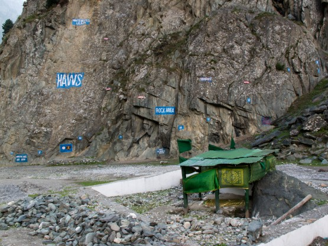
Военный скаладром (?)
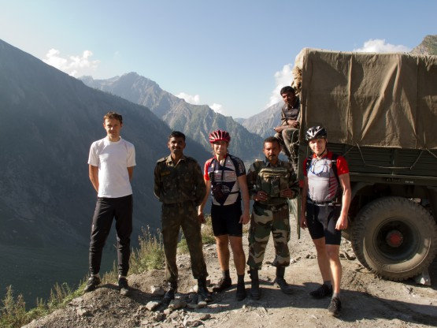
Пост на повороте серпантина. За хребтом Пакистан.
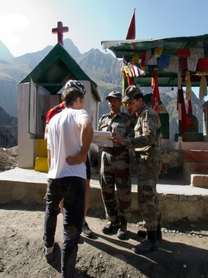
А эти ребята угощали нас сахаром. Пост у святого места, кстати хрестианского и буддистского одновременно.
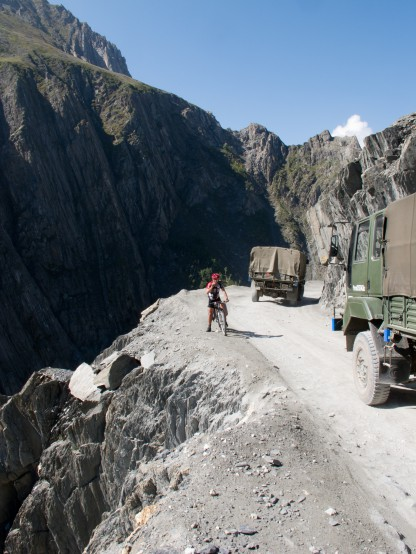
Колонна военной техники, порядка 50 грузовиков
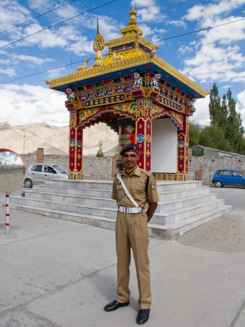
Военный с пером, ну очень парадный -)
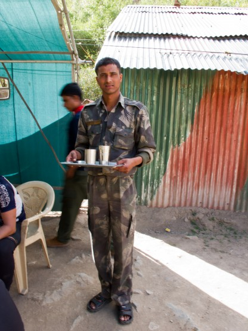
Нас угощают соком при проверке документов
Езда по жаре
В первоначальный план похода не входила равнинная часть Индии, но так получилось, что участок Манали-Шимла мы проскочили очень быстро, примерно в 2-3 раза быстрее, чем описано в книге и многочисленных отчетах. В итоге у нас осталось 2 свободных дня. Идея провести эти дни в городе восторга не вызывала, с другой стороны хотелось узнать, что представляет из себя равнинная Индия, и как едется по жаре и при высокой влажности. Решили ехать своим ходом до Дели.
Термометра у нас собой не было, но однажды ночью увидел в городе надпись +35, значит днем было около +40. Если честно, то я ожидал, что будет сложнее. Хорошо врезался в память момент нашего выхода из аэропорта в Дели (в день прилета) - тогда как раз закончился тропический ливень и нам показалось, что мы зашли из кондиционированного аэропорта в русскую баню, причем в ней только что хорошо поддали.
Примерно такого я ожидал от равнинного участка, но похоже мы уже хорошо акклиматизировались (не понятно с чего, наверху был дубак). Хорошо, что сразу выбрали правильную тактику езды: ранний подъем (5.00 по местному, 3.30 по нашему), крутим до полуденной жары, находим кафе с тенью и зависаем там часа на 3, после сиесты едем до самой темноты.
Такой график позволил проехать 150 и 186 километров в последние дни, причем 150 по ощущениям было вполне нормально, а вот 186 (из них 35 по Дели) уже перебор.
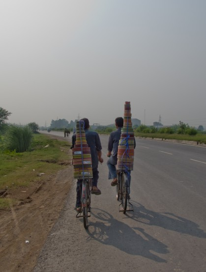
Национальный хайвей №1, велосипедисты везут ленточки
Индийское дорожное движение
Движение на улицах индийских городов это нечто. Описать словами его трудно, нужно видеть. Все сигналят и едут в хаотичном броуновском потоке. Как ни странно, но к левостороннему движению привыкаешь довольно быстро, а вот расходиться с пешеходами влево я так и не привык. Аналогично не привык к "встречникам" которые едут навстречу потоку вдоль обочины, причем даже на национальном хайвее №1 и даже рейсовые автобусы. Кстати автобусы ездят хуже всех, нарушают все подряд, несутся по серпантину будто у них 5 жизней в запасе.
В общем и целом народ там не гоняет и относится к остальным участникам движения с уважением. Если водителю очень хочется обогнать, а возможности нет, то он сигналит и его пропускают.
Печально, но это характерно, наверное, для всей Азии - велосипедист это самый младший участник дорожного движения, его не пропускает никто. Так что тормозные ручки особо не отпустишь.
Павел:
В равнинной части мы много раз наблюдали картину, когда по одной полосе, начиная слева направо, движутся велосипедисты, потом рикши, потом такси-коробочки и мотороллеры, ещё правее легковые машины, а в самом правом ряду грузовики и автобусы. У кого есть сигнал - сигналит )
Удивительно, но при всем внешнем хаосе мы практически не видели аварий. Да, поцарапанных машин много, но индийцы к этому относятся сильно проще. Однажды видели, как автобус в густой пыли не заметил мотороллер и малость его придавил. Водители перекинулись парой слов (без признаков агрессии), табуреточник отряхнулся и поехал дальше.
Один раз на серпантине из-за закрытого поворота мне в лоб по встречке вылетел автобус, быстро вылетел, я успел прижаться к скале и затормозить, а он пролетел в 2 сантиметрах от руля не снижая скорости. . . было не приятно, но повторюсь - автобусы это самый непредсказуемый участник индийского дорожного движения.
Все наверняка видели фотографии машин, перевозящих полный кузов людей, которые только что не свисают из него. Это действительно так и вполне обычное явление.
Курьезный случай произошел с нами при подброске за пермитами в Каргил. Водитель пикапа, на котором мы ехали, а вернее неслись вверх по серпантину, примерно через 20 километров неожиданно высунулся из форточки и что то сказал в сторону неба. . . если учесть, что при этом колеса пикапа периодически зависали над пропастью, то понятно почему нам стало не по себе. Каково же было наше удивление, когда на остановке около деревни с крыши пикапа спрыгнул человек и, мило распрощавшись с нашим водителем, удалился в темноту. Когда и как он залез на крышу, так что мы его даже не заметили и как он там держался эти 30 километров на бешеной скорости, это осталось для нас загадкой.
Пару слов о технике, которая ездит по дорогам. Подавляющее большинство машин производства "Тата" (Tata Engineering And Locomotive Co., Ltd.) индийского производителя автомобилей, грузовики, автобусы, легковушки, в сумме процентов 80 от общего числа машин. Еще 10 процентов "Махиндра" (Mahindra & Mahindra Std.) опять же собственного производства, в основном пикапы и моторикши. Интересно, что из оставшихся 10% минимум половина машины совместного производства, например, "сузуки-чего-то там". Что сказать, молодцы индийцы.

рикша
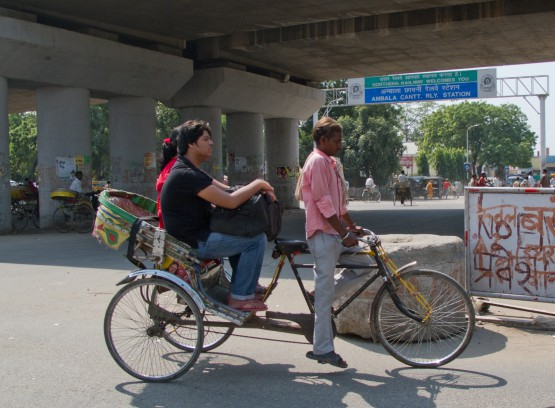
Максимальное количество людей, перевозимх одним рикшей доходит до 4
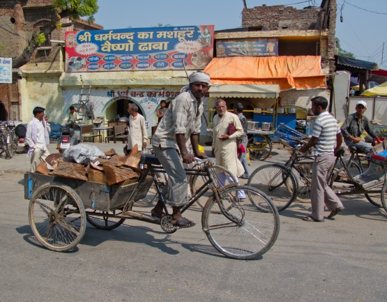
А это грузовой вариант
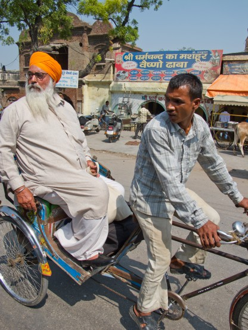
Все рикши очень худые, чего нельзя сказать о их пасажирах
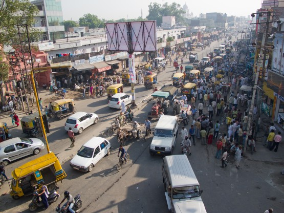
Обычная уица обычного города
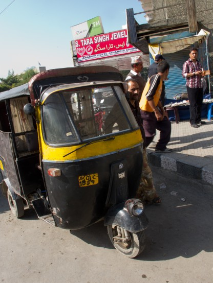
Моторикша, возит до 8 человек, кстати большинство госномеров нарисовано самими водителями
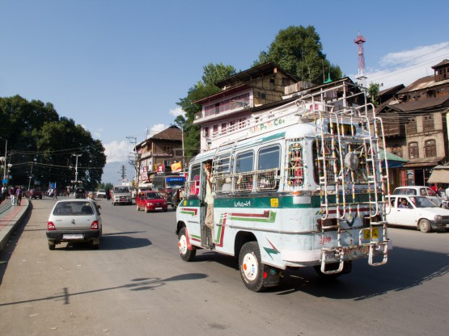
А это уже целый автобус, на лесенах сзади часто висят несколько человек
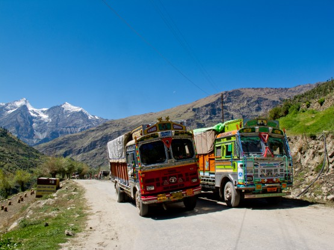
Те самые ТАТА - основной вид трнспорта в горах
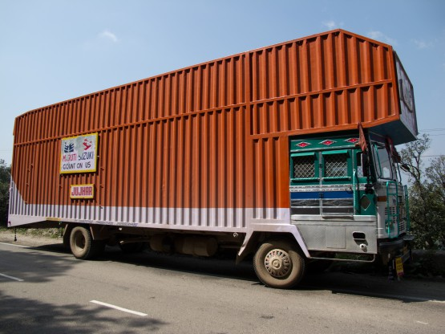
Групногабаритная ТАТА, такие водятся в предгорьях
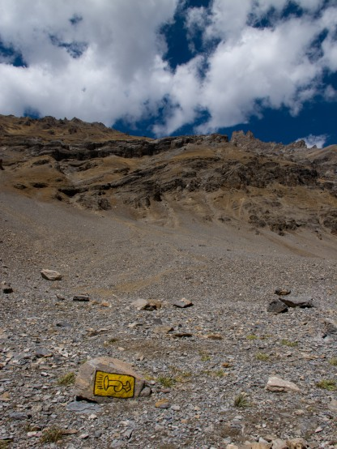
Посигналь!

Дуй в горн! Кстати эта надпись присутствует на каждом грузовике, так что сигналят они не просто по привычке
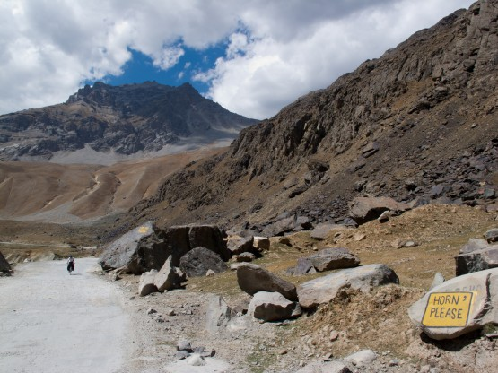
Такие и подобные надписи есть практически около каждого закрытого поворота дороги. Водители действительно сигналят.
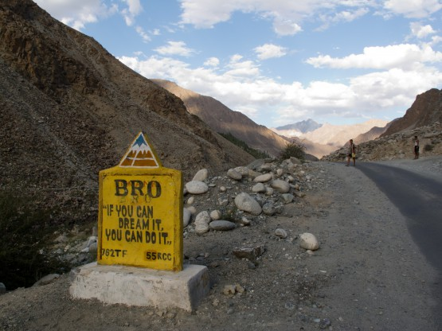
Придорожной агитацие занимается некая контора BRO. Тексты на разные темы, но больше всего против лихачей и пьяных за рулем, хотя встречаются и позитивно-психологические.
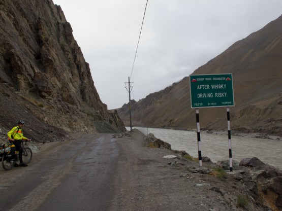
Кто бы спорил
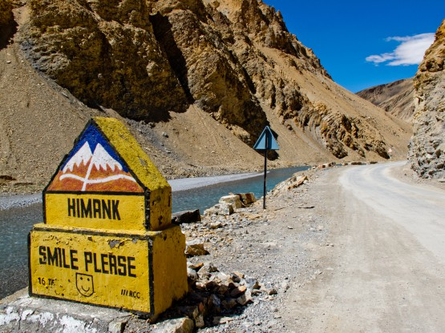
Смешной смайлик -)